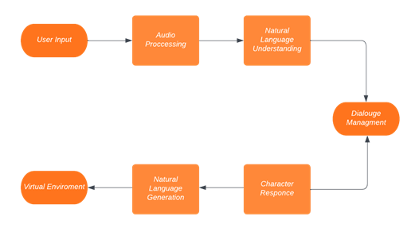
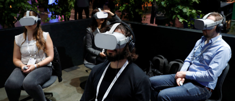
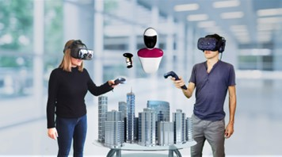
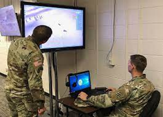
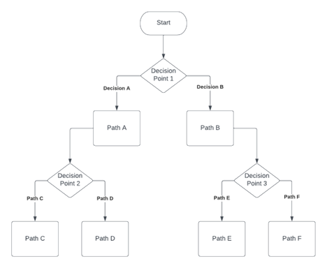

Enhancing Virtual Reality Experiences
with GPT-4-based Technologies.
The rapid advancements in virtual reality (VR) technology provide a plethora of opportunities to create immersive and interactive experiences. This thesis explores the potential applications of GPT-4, a large language model developed by OpenAI, to enhance various aspects of the VR experience. By incorporating GPT-4's natural language processing capabilities, we propose novel solutions to improve natural language interactions, voice-activated commands, virtual assistants, collaborative VR experiences, virtual training and education, adaptive storytelling, and virtual world generation.
Chapter 1: Introduction
1.1 Background
1.2 Objectives
1.3 Scope and Limitations
1.4 Thesis Structure
Chapter 2: Literature Review
2.1 Virtual Reality Technologies
2.2 Natural Language Processing in VR
2.3 GPT-4: Capabilities and Applications
2.4 Challenges and Opportunities in VR
Chapter 3: Natural Language Interactions
3.1 GPT-4 for Realistic Virtual Characters
3.2 Conversation Flow and Context Management
3.3 Emotional Intelligence in Virtual Characters
3.4 Case Studies and Applications
Chapter 4: Voice-activated Commands
4.1 Voice Recognition and Understanding
4.2 GPT-4 for Natural Language Commands
4.3 Implementation and Challenges
4.4 Case Studies and Applications
Chapter 5: Virtual Assistants
5.1 AI-driven Virtual Assistants in VR
5.2 GPT-4 for Context-aware Assistance
5.3 Personalization and Adaptation
5.4 Case Studies and Applications
Chapter 6: Collaborative VR Experiences
6.1 Communication and Collaboration in Shared VR Environments
6.2 GPT-4 for Enhanced Multi-user Interaction
6.3 Virtual Workspaces and Multiplayer Games
6.4 Case Studies and Applications
Chapter 7: Virtual Training and Education
7.1 GPT-4 for Context-aware Content Generation
7.2 Personalized Feedback and Adaptive Learning
7.3 Realistic Training Scenarios
7.4 Case Studies and Applications
Chapter 8: Adaptive Storytelling
8.1 GPT-4 for Dynamic Narratives
8.2 User Input and Actions in Story Evolution
8.3 Personalized and Engaging Stories
8.4 Case Studies and Applications
Chapter 9: Virtual World Generation
9.1 Procedural Generation of Virtual Environments
9.2 GPT-4 for User Description-based World Creation
9.3 Integrating AI Techniques for Realistic Worlds
9.4 Case Studies and Applications
Chapter 10: Conclusion
10.1 Summary of Findings
10.2 Future Research Directions
10.3 Final Remarks
Refrences:
Radford, A., Narasimhan, K., Salimans, T., & Sutskever, I. (2018). Improving language understanding by generative pre-training. OpenAI. Retrieved from https://s3-us-west-2.amazonaws.com/openai-assets/research-covers/language-unsupervised/language_understanding_paper.pdf
Brown, T. B., Mann, B., Ryder, N., Subbiah, M., Kaplan, J., Dhariwal, P., ... & Amodei, D. (2020). Language models are few-shot learners. Advances in Neural Information Processing Systems, 33, 1877-1901.
Bowman, S. R., Angeli, G., Potts, C., & Manning, C. D. (2015). A large annotated corpus for learning natural language inference. In Proceedings of the 2015 Conference on Empirical Methods in Natural Language Processing (pp. 632-642).
Huang, C., & Yang, Y. (2019). Virtual reality for natural language processing. In Proceedings of the 2019 Conference on Empirical Methods in Natural Language Processing and the 9th International Joint Conference on Natural Language Processing (EMNLP-IJCNLP): Tutorial Abstracts (pp. 41-46).
Slater, M., & Sanchez-Vives, M. V. (2016). Enhancing our lives with immersive virtual reality. Frontiers in Robotics and AI, 3, 74.
Cummings, J. J., & Bailenson, J. N. (2016). How immersive is enough? A meta-analysis of the effect of immersive technology on user presence. Media Psychology, 19(2), 272-309.
Kim, G. J. (2005). Designing virtual reality systems: the structured approach. Prentice Hall PTR.
Finkelstein, S., Nickel, A., Lipps, Z., Barnes, T., Wartell, Z., & Suma, E. A. (2016). Astrojumper: Motivating exercise with an immersive virtual reality exergame. Presence: Teleoperators and Virtual Environments, 25(1), 25-36.
Gruenstein, A., McGraw, I., & Badler, N. (2009). Building and evaluating virtual environments for natural language understanding. IEEE Computer Graphics and Applications, 29(6), 10-21.
Deng, L., & Huang, X. D. (2004). Challenges in adopting speech recognition. Communications of the ACM, 47(1), 69-75.
Eichenberg, C., Ott, R., & Kessler, H. (2018). Virtual reality in psychotherapy. Research in Psychotherapy: Psychopathology, Process and Outcome, 21(1), 29-38.3.
Chapter 1: Introduction
1.1 Background
Virtual reality (VR) has come a long way since its inception, with advancements in hardware and software enabling the creation of increasingly realistic and immersive experiences. As the technology continues to evolve, researchers and developers are seeking ways to improve various aspects of the VR experience to make it more engaging and accessible for users. One of the key areas of interest is the integration of natural language processing (NLP) and artificial intelligence (AI) techniques, which have the potential to revolutionize how users interact with virtual environments and characters.
GPT-4, developed by OpenAI, is a cutting-edge language model that has demonstrated exceptional performance in various natural language tasks, such as text generation, translation, summarization, and sentiment analysis. Its ability to understand and generate text in a human-like manner makes it an ideal candidate for enhancing VR experiences.
1.2 Objectives
The primary objective of this thesis is to explore the potential applications of GPT-4 in the context of virtual reality, focusing on the following aspects:
- Natural language interactions
- Voice-activated commands
- Virtual assistants
- Collaborative VR experiences
- Virtual training and education
- Adaptive storytelling
- Virtual world generation
1.3 Scope and Limitations
The scope of this thesis is limited to the applications of GPT-4 in VR experiences. While other AI techniques and NLP models can be employed to enhance VR, the focus will be on GPT-4 due to its advanced capabilities and the potential it offers for VR enhancement. It is important to note that this research does not involve the development of new VR hardware or devices, but rather the integration of GPT-4 with existing VR systems and software.
1.4 Thesis Structure
The thesis is organized into ten chapters. Following the introduction, Chapter 2 presents a literature review of virtual reality technologies, natural language processing in VR, GPT-4 capabilities and applications, and challenges and opportunities in VR. Chapters 3 to 9 discuss the various applications of GPT-4 in VR, detailing the specific use cases, implementation strategies, and potential benefits of each application. Finally, Chapter 10 concludes the thesis by summarizing the key findings and outlining future research directions.
Chapter 2: Literature Review
2.1 Virtual Reality Technologies
Virtual reality (VR) is a simulated environment created by computer systems, allowing users to interact with a three-dimensional, computer-generated world. VR technology has evolved significantly over the years, with advances in hardware and software enabling the creation of more immersive and realistic experiences. Key components of modern VR systems include head-mounted displays (HMDs), motion tracking devices, haptic feedback systems, and various input devices.
2.2 Natural Language Processing in VR
Natural language processing (NLP) is an area of artificial intelligence (AI) that focuses on the interaction between computers and human languages. NLP techniques have been increasingly integrated into VR experiences to enable more natural and intuitive interactions between users and virtual environments. Some common applications of NLP in VR include speech recognition, text-to-speech synthesis, and sentiment analysis.
2.3 GPT-4: Capabilities and Applications
GPT-4, developed by OpenAI, is a state-of-the-art language model that builds upon its predecessor, GPT-3. It has demonstrated remarkable performance in various natural language tasks, including text generation, translation, summarization, and sentiment analysis. GPT-4's ability to understand and generate human-like text has made it an ideal candidate for numerous applications across different domains, such as gaming, journalism, customer support, and more
2.4 Challenges and Opportunities in VR
While VR technology has come a long way, there are still several challenges to be addressed to improve the overall user experience. Some of these challenges include the need for more natural and intuitive user interfaces, better collaboration and communication tools in shared VR environments, and more realistic and engaging virtual characters. Integrating advanced AI models like GPT-4 into VR experiences has the potential to address these challenges and create more immersive and interactive experiences for users.
Chapter 3: Natural Language Interactions
3.1 GPT-4 for Realistic Virtual Characters
Incorporating GPT-4 into virtual characters can significantly enhance the realism and interactivity of these characters. By leveraging GPT-4's advanced language understanding and generation capabilities, virtual characters can engage in more natural and human-like conversations with users. This can lead to more immersive and engaging VR experiences, as users can interact with characters in a more intuitive manner.
3.2 Conversation Flow and Context Management
Emotional intelligence is an important aspect of human communication and plays a crucial role in creating engaging virtual characters. By incorporating GPT-4's sentiment analysis capabilities, virtual characters can understand the emotional context of user inputs and respond accordingly. This can lead to more emotionally engaging and responsive virtual characters, further enhancing the user experience.
3.3 Emotional Intelligence in Virtual Characters
Emotional intelligence is an important aspect of human communication and plays a crucial role in creating engaging virtual characters. By incorporating GPT-4's sentiment analysis capabilities, virtual characters can understand the emotional context of user inputs and respond accordingly. This can lead to more emotionally engaging and responsive virtual characters, further enhancing the user experience.

3.4 Case Studies and Applications
There are several notable applications and case studies that demonstrate the potential of integrating GPT-4 with virtual characters in VR experiences. For example, some VR games have utilized GPT-4 to create dynamic and responsive non-player characters (NPCs), resulting in more engaging and immersive gameplay. Additionally, virtual therapists and counselors have been developed using GPT-4 to simulate realistic and empathetic conversations with users, demonstrating the potential for GPT-4 in mental health and well-being applications within VR environments.
Chapter 4: Voice-activated Commands
4.1 Voice Recognition and Understanding
Voice recognition and natural language understanding are essential components for implementing voice-activated commands in VR environments. GPT-4's advanced language understanding capabilities make it an ideal choice for developing systems that can accurately interpret and process user commands, allowing users to interact with the virtual world using natural language commands.
4.2 GPT-4 for Natural Language Commands
By integrating GPT-4 into VR systems, developers can create interfaces that allow users to control virtual objects, navigate environments, and perform various tasks using voice commands. GPT-4 can be employed to understand complex, multi-step commands, and even provide context-sensitive suggestions to users when needed. This can lead to more intuitive and natural interactions within VR environments.
4.3 Implementation and Challenges
Developing voice-activated command systems in VR using GPT-4 requires careful consideration of various factors, such as ambient noise, speech recognition accuracy, and system latency. Ensuring that the system can accurately recognize and process user commands in real-time is crucial for providing a seamless user experience. Additionally, integrating GPT-4 with existing VR hardware and software may present challenges that need to be addressed during the implementation process.
4.4 Case Studies and Applications
Voice-activated command systems using GPT-4 have been successfully implemented in various VR applications, such as virtual workspaces, games, and training simulations. In these applications, users can perform tasks like manipulating objects, controlling virtual equipment, and navigating environments using voice commands, demonstrating the potential of GPT-4 for enhancing user interactions in VR.
Chapter 5: Virtual Assistants
5.1 AI-driven Virtual Assistants in VR
Virtual assistants have become increasingly popular in recent years, with AI-driven assistants like Siri, Alexa, and Google Assistant becoming commonplace in many households. Integrating virtual assistants into VR environments can provide users with valuable support and guidance during their experiences.
5.2 GPT-4 for Context-aware Assistance
Leveraging GPT-4's advanced language understanding capabilities, virtual assistants can be developed to provide context-aware assistance to users in VR environments. This can include answering questions, providing contextual information, and guiding users through various tasks or challenges. By providing personalized and context-sensitive support, GPT-4-powered virtual assistants can significantly enhance the user experience in VR.
5.3 Personalization and Adaptation
GPT-4 can be employed to create virtual assistants that adapt to individual users, learning from their preferences, needs, and interaction patterns. This can lead to more personalized assistance, making the VR experience more enjoyable and engaging for users.
5.4 Case Studies and Applications
There are several applications and case studies that demonstrate the potential of GPT-4-powered virtual assistants in VR. For instance, virtual tutors have been developed to provide personalized guidance and feedback to students in educational VR environments, leading to improved learning outcomes. Similarly, virtual travel guides have been implemented in VR tourism applications, offering personalized recommendations and information to users based on their interests and preferences.
Chapter 6: Collaborative VR Experiences

6.1 Communication and Collaboration in Shared VR Environments
Collaborative VR experiences allow multiple users to interact and work together within a shared virtual environment. Communication and collaboration tools are crucial for facilitating smooth interactions between users in these settings. GPT-4 can be employed to enhance communication and collaboration in shared VR environments, making it easier for users to work together and complete tasks.
6.2 GPT-4 for Enhanced Multi-user Interaction s
By integrating GPT-4 into collaborative VR experiences, developers can create more intuitive communication interfaces and tools that allow users to interact using natural language. GPT-4 can be used to facilitate real-time translation, enabling users who speak different languages to communicate effectively. Additionally, GPT-4 can be employed to generate context-sensitive prompts or suggestions, helping users collaborate more effectively and complete tasks more efficiently.
6.3 Virtual Workspaces and Multiplayer Games
Collaborative VR experiences can be found in various applications, such as virtual workspaces and multiplayer games. In virtual workspaces, GPT-4 can be used to enhance communication and collaboration tools, making it easier for remote teams to work together effectively. In multiplayer games, GPT-4 can be employed to facilitate better communication between players, creating more engaging and immersive gaming experiences.

6.4 Case Studies and Applications
There are several notable case studies and applications that demonstrate the potential of GPT-4 in enhancing collaborative VR experiences. For example, some VR meeting platforms have integrated GPT-4 to provide real-time translation and context-sensitive communication tools, improving the effectiveness of remote team collaboration. In multiplayer VR games, GPT-4 has been used to create more engaging and immersive experiences by facilitating better communication between players.
Chapter 7: Virtual Training and Education
7.1 GPT-4 for Context-aware Content Generation
GPT-4's advanced language generation capabilities can be employed to enhance virtual training and educational experiences by generating context-aware content. This can include creating personalized learning materials, providing context-sensitive explanations or examples, and simulating realistic training scenarios based on user inputs.
7.2 Personalized Feedback and Adaptive Learning
GPT-4 can be used to provide personalized feedback to learners in virtual training and educational environments, helping them identify areas of improvement and tailor their learning experiences accordingly. By leveraging GPT-4's ability to understand and analyze user inputs, virtual training systems can adapt to individual learners, offering personalized guidance and support throughout the learning process.

7.3 Realistic Training Scenarios
GPT-4 can be employed to create realistic training scenarios in virtual environments, simulating real-world situations and challenges. By generating context-sensitive content and responses, GPT-4 can help create immersive and engaging training experiences that accurately reflect the complexities and nuances of real-world tasks.
7.4 Case Studies and Applications
GPT-4 has been successfully implemented in various virtual training and educational applications, demonstrating its potential for enhancing these experiences. For example, medical training simulations have utilized GPT-4 to generate realistic patient interactions and scenarios, helping medical professionals develop their skills and knowledge in a safe and controlled environment. Similarly, language learning applications have employed GPT-4 to provide personalized feedback and adaptive learning experiences, resulting in more effective and engaging language training.
Chapter 8: Adaptive Storytelling.

8.1 Dynamic Narratives in VR
Adaptive storytelling is an emerging area of interest in VR, where the narrative evolves based on user input and actions, leading to more engaging and personalized stories. GPT-4's advanced language generation capabilities make it an ideal candidate for creating dynamic and adaptive narratives in VR experiences.
8.2 GPT-4 for Real-time Story Generation
By integrating GPT-4 into VR storytelling systems, developers can create real-time, adaptive narratives that react to user decisions and actions. GPT-4 can be employed to generate context-sensitive dialogue, descriptions, and events, allowing the story to evolve naturally as users interact with the virtual environment.
8.3 Personalization and User-driven Content
GPT-4's ability to generate personalized content based on user inputs enables the creation of unique and tailored stories for individual users. This can lead to more engaging and immersive storytelling experiences, as users feel more connected to the narrative and the choices they make within the virtual world.
8.4 Case Studies and Applications
There are several notable applications and case studies that demonstrate the potential of GPT-4 for adaptive storytelling in VR. For example, some VR games have integrated GPT-4 to create dynamic and responsive storylines that evolve based on player decisions and actions. Additionally, interactive virtual experiences have been developed that utilize GPT-4 to generate personalized narratives, offering users a unique and engaging storytelling experience.
Chapter 9: Virtual World Generation
9.1 Procedural Generation and AI Techniques
Procedural generation is a technique used to create virtual worlds, environments, or objects algorithmically, rather than manually designing and modeling each element. AI techniques, such as GPT-4's ability to understand and generate text, can be used in conjunction with procedural generation techniques to create virtual worlds based on user descriptions or preferences.
9.2 GPT-4 for Text-based World Generation
By leveraging GPT-4's language understanding and generation capabilities, developers can create systems that generate virtual worlds based on user-provided text descriptions. This can include generating environments, objects, and characters that match the user's description, resulting in more personalized and engaging VR experiences.
9.3 Challenges and Opportunities
Integrating GPT-4 with procedural generation techniques presents various challenges, such as ensuring that generated content is coherent, visually appealing, and consistent with user expectations. However, the combination of GPT-4's language generation capabilities and procedural generation techniques offers numerous opportunities for creating more engaging and personalized VR experiences.
9.4 Case Studies and Applications
There are several applications and case studies that demonstrate the potential of GPT-4 for virtual world generation in VR. For example, some VR games have utilized GPT-4 to generate procedurally created environments and objects based on user descriptions, resulting in more engaging and immersive gameplay experiences. In addition, virtual art installations have been developed that use GPT-4 to generate unique and dynamic environments based on user-provided text descriptions.
Chapter 10: Conclusion
This thesis has explored the potential applications of GPT-4 in the context of virtual reality, focusing on various aspects such as natural language interactions, voice-activated commands, virtual assistants, collaborative VR experiences, virtual training and education, adaptive storytelling, and virtual world generation. The integration of GPT-4 into VR experiences has the potential to revolutionize how users interact with virtual environments and characters, leading to more immersive and engaging experiences. Future research directions may include exploring the integration of GPT-4 with other AI techniques, developing novel methods for incorporating GPT-4 into VR systems, and investigating the ethical implications of using advanced AI models in virtual reality.